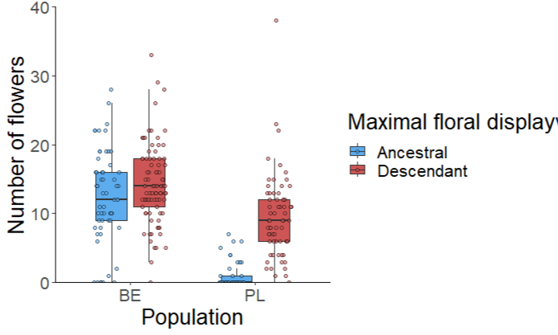
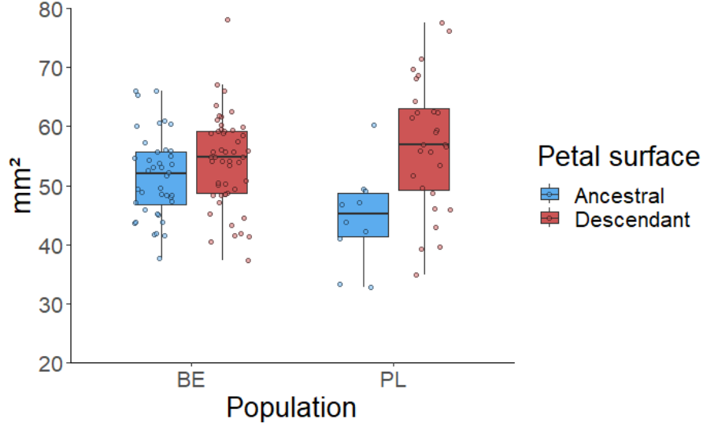
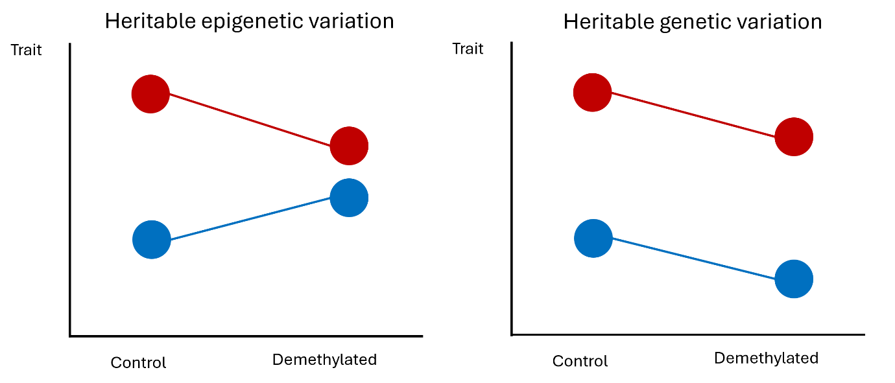

Rapid evolution of selfing syndrome in plants studied with resurrection
ecology
Overview
The resurrection method is a new ecological approach for the study of rapid
adaptation in natural populations. A basic resurrection study is a common
garden experiment where ancestral genotypes (preserved as seeds in natural
seed banks or seed repositories) are grown side-by-side with their
descendant genotypes (sampled in the same site at present). This setting
allows for instant comparison between ancestral and descendant genotypes. If
phenotypic trait shifts are detected between ancestors and descendants, they
can be interpreted as the outcome of rapid evolution.
The resurrection method opens the possibility for the study of rapid
evolution in arable weeds, which are exposed to new, intense selective
pressures with the development of modern agriculture and global change. In
particular, pollinator decline, coupled with phenological mismatches in
flowering time due to temperature fluctuations, could lead towards increased
self-pollination and a decreased attractivity of plants to pollinators
(selfing syndrome). Alternatively, arable weeds could evolve towards
increasing their attractivity to pollinators, thus maintaining pollinator
interactions despite the reduction in pollination services. Empirical
observation of contemporary evolution in arable weeds has produced data in
line with both hypotheses, and it is likely that the direction of trait
changes is species- and even population-specific.
I used the resurrection method with two self-compatible, insect-pollinated,
annual, arable weeds (Matthiola tricuspidata and Centaurium erythraea) to
investigate the effects of climate change and pollinator decline on the
evolution of their reproductive and pollination strategies. An innovative
aspect I implemented is the upgrade of the basic resurrection common garden
with other approaches from evolutionary ecology – reciprocal transplant in
simulated environments, genomic tools, and ecological epigenetics.
Are observed trait shifts in Matthiola tricuspidata compatible with
adaptation to climate change and pollinator decline? A reciprocal
“transplant in time” experiment
Figure 1. Results of a reciprocal "transplant in time" resurrection
experiment using ancestral and descendant genotypes from a natural
population of Matthiola tricuspidata sampled 24 year apart.
While common garden resurrection experiments can tell us about phenotypic
trait shifts between ancestors and descendants, they cannot directly test
whether these shifts are adaptive. I tested the adaptive character of
observed phenotypic shifts between ancestors and descendants in the
Mediterranean annual, Matthiola tricuspidata, using reciprocal
“transplants in time”. To do this, ancestral and descendant genotypes of
one natural population were grown in simulated past and present-day
environmental conditions in regulated growth chambers. Past conditions
were characterized by lower temperature, higher precipitation levels and
humidity compared to present-day conditions. In both experimental
environments, ancestral and descendant genotypes were significantly
different from one another. In both growth chambers, descendants flowered
earlier (consistent with adaptation to warmer springs, Figure 1 top), had
larger daily floral displays (consistent with adaptation to maintain
pollinator interactions via increase attractivity, Figure 1 middle). Plant
size was measured as a fitness proxy, showing overall larger plants in the
present-day, warmer and drier environment. Ancestors were larger than
descendants in the past environment, but no significant differences
between ancestors and descendants, suggesting that both ancestral and
descendant genotypes are capable of increasing their vegetative growth in
warmer and drier environments (Figure 1 bottom).
Adaptation of Centraurium erythraea to pollinator decline and climate change
revealed by the resurrection method

Figure 2. Maximal floral display for ancestral and descendant genotypes
in two populations (BE - Belgium, and PL - Poland) harvested 17-24 years
apart
Ancestral and descendant seeds from two natural populations of C.
erythraea – one from Belgium (ancestors and descendants sampled 24 years
apart) and one from Poland (sampled 17 years apart) were grown in a common
garden, and phenotypic and genetic diversity was compared to disentangle
the effects of random from those of selective evolution.
In both populations, the descendants had larger daily floral displays
(Figure 2) and larger petals (Figure 3), whereas the anther-stigma distance
remained unchanged (Figure 4). Altogether, the observations show an
evolution to increased flower attractiveness that could maintain
plant-pollinator interactions.

Figure 3. Petal surface of ancestral and descendant genotypes in two
populations (BE - Belgium, and PL - Poland) harvested 17-24 years apart
Figure 4. Estimates of herkogamy (anther:stigma deviation) of ancestral
and descendant genotypes in two populations (BE - Belgium, and PL -
Poland) harvested 17-24 years apart
Pairwise Fst estimates showed low differentiation between ancestors and
descendants in Belgium (0.077), and high differentiation in Poland
(0.292). This suggests the occurrence of major evolutionary or demographic
changes in the Polish population since the sampling of ancestral genotypes
(e.g. migration, extinction and recolonization) or possible high sampling
bias in the past. This result illustrates a shortcoming of resurrection
studies that is often acknowledged but rarely accounted for – with only
two temporal points in a single population, it is difficult to disentangle
the effects of natural selection from stochastic variation in allelic
frequencies due to random evolutionary processes or sampling bias. As
returning in the past to resample the population is not an option, testing
for different evolutionary scenarios using approximate Bayesian
computations (ABC) could bring insight into the population evolutionary
history. This nevertheless requires genotyping neighboring populations to
be able to infer the probability that Poland the sampled descendant
genotypes are direct offspring of the genotypes present in 2003, or were
introduced from another population in its vicinity.
Disentangling genetic from hereditary epigenetic variation in the rapid
adaptation of Centaurium erythrae. Combining the resurrection method with
ecological epigenetics
This ongoing pilot introduces ecological epigenetics within the existing
framework of resurrection ecology, for a novel approach of the study of
rapid plant adaptation to global change and pollinator decline via
transgenerational plasticity. Indeed, it has been shown that
transgenerational plasticity can persist in plants for multiple generations,
mediated via hereditary epigenetic modifications such as DNA methylation.
To test for potential effects of transgenerational plasticity mediated by
hereditary epigenetic variation, I cultivated F1 descendants of the same two
populations of C. erythraea as above in a common garden. Half of the plants
were subjected to a demethylation treatment by spraying a solution of
5-azacitidine, which should indiscriminately reduce methylation levels in
all treated plants. If phenotypic trait shifts are due to hereditary
epigenetic differences, I expect the phenotypic differences between
ancestors and descendants to be reduced or even cancelled out in the
demethylation compared to the control treatment. If the differences between
ancestors and descendants are mainly governed by genetic variation, then the
demethylation treatment should not have an effect on the overall differences
between ancestors and descendants (Figure 5). The study will investigate
shifts in life history traits for the entire lifecycle of C. eythraea from
juvenile growth rates, through leaf economic spectra, flowering phenology,
to plant attractivity and fitness.

Figure 5. Possible outcomes of an ecological epigenetic assay combined
with the resurrection method